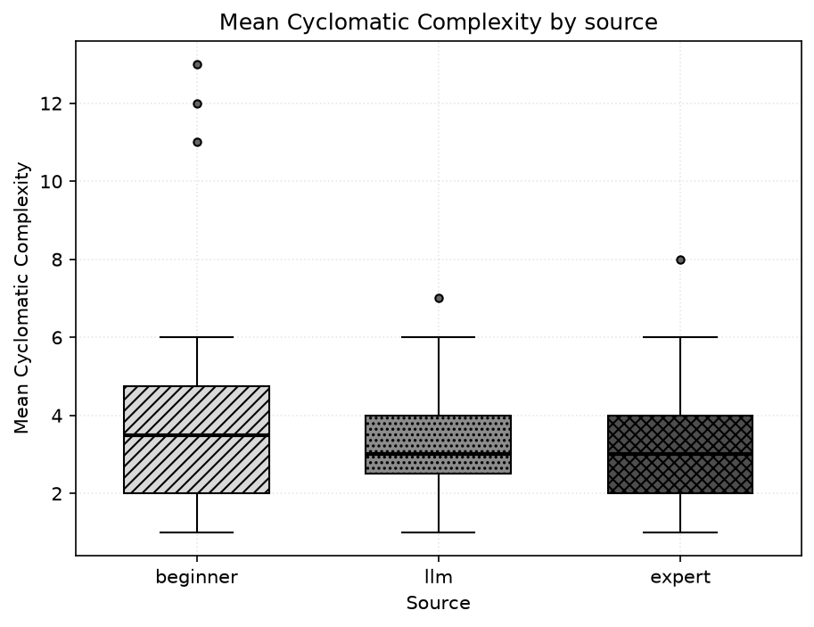
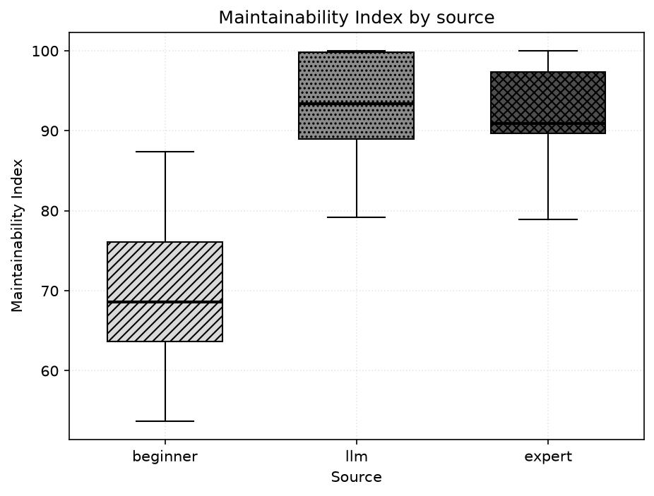
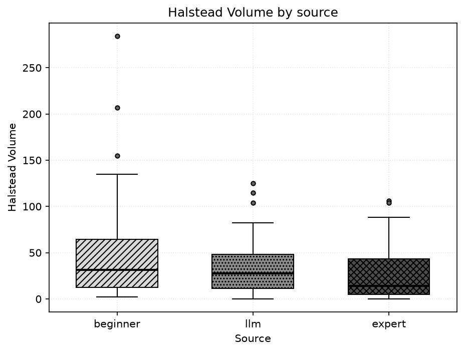
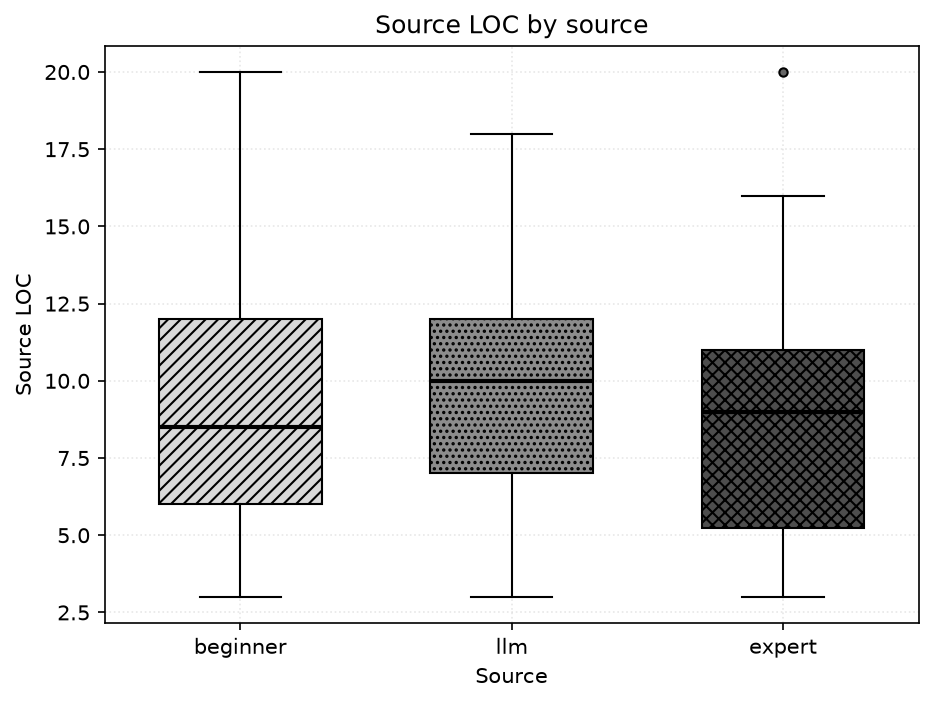
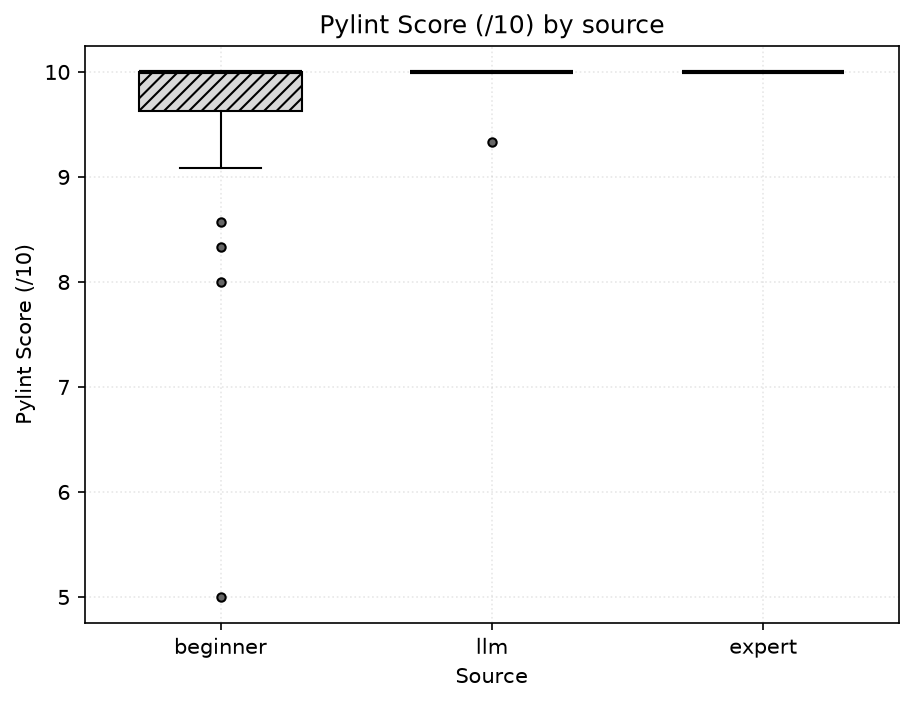
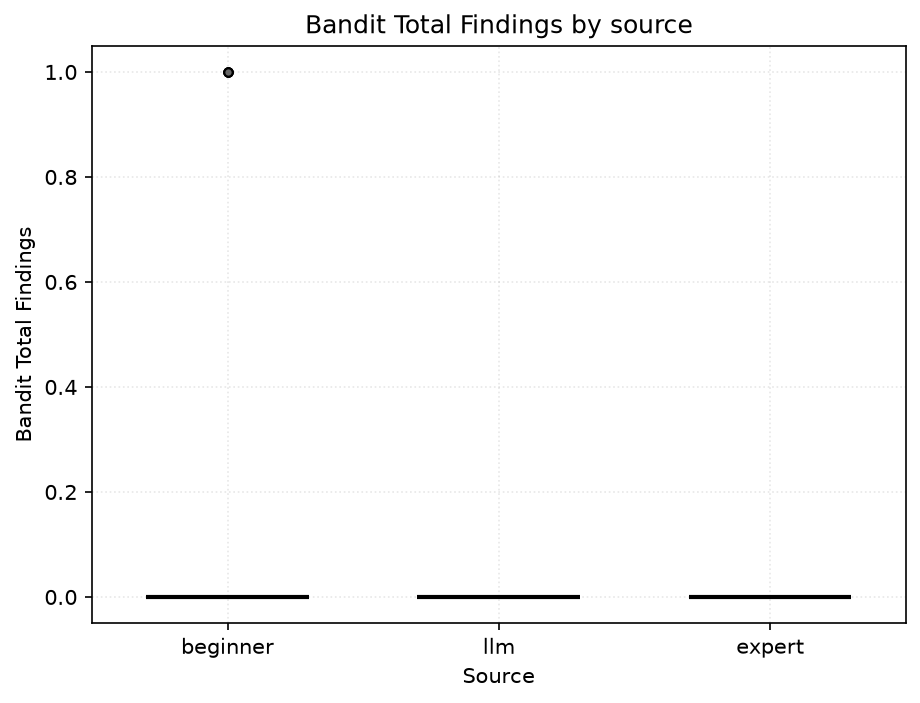
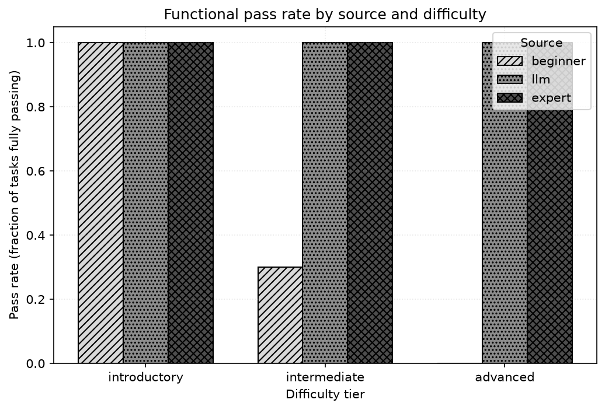
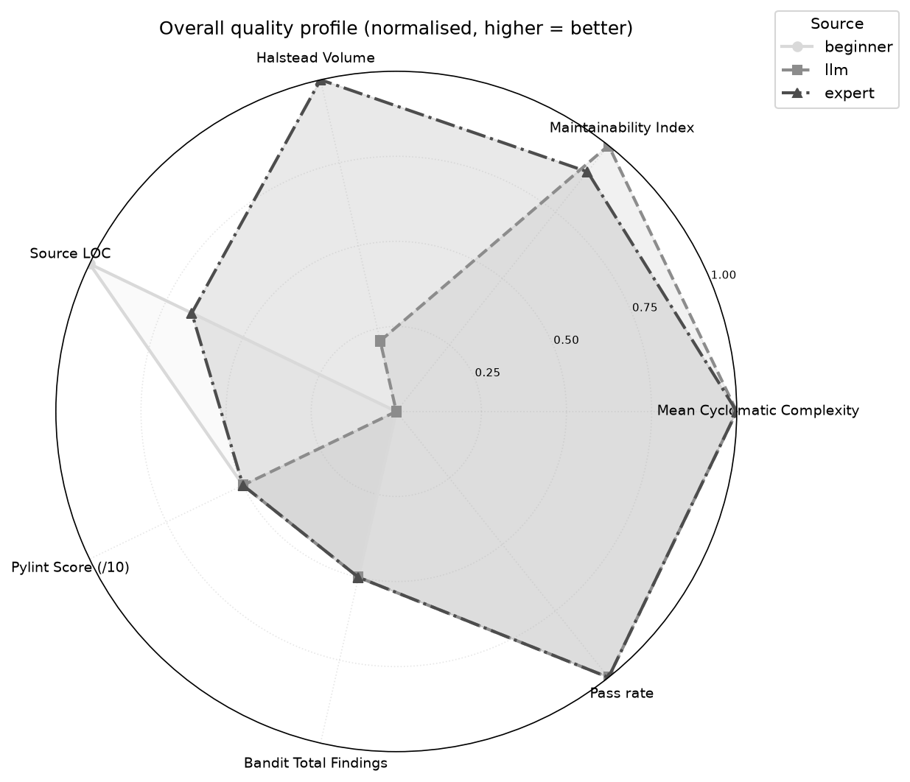

Author: Tharun
Institution: University of Roehampton
Date: 2026-10-16
This report is generated automatically by run_analysis.py. Every figure, table and statistic below is read directly from outputs/metrics.csv and outputs/stats.json; no value is entered by hand. Where a value could not be computed it is shown as N/A.
This study compares Python solutions from three sources — beginner, LLM, and expert — across 30 benchmark tasks, using static-analysis metrics, functional testing and non-parametric statistics. Headline findings, all computed from the data:
Overall visible-test pass rate: beginner 43.3%, llm 100.0%, expert 100.0%. A paired task-level Cochran Q test using LLM sample 1 gives: differences in pass rate across sources are statistically significant (Cochran Q p=4e-08). These results are not independently unseen-test estimates.
Large Language Model (LLM) coding assistants now sit between two long-standing reference points in software engineering: the novice programmer who is still acquiring idiom and rigour, and the experienced expert who writes concise, maintainable, secure code. Most published comparisons are binary — human versus AI — which collapses the very real gap between a beginner and an expert into a single 'human' category.
This project takes a three-way view. It asks not only whether LLM output differs from human output, but where on the novice-to-expert spectrum it sits. To do that objectively it applies the same automated pipeline of complexity, maintainability, style and security metrics to every solution, then tests each one for functional correctness and compares the groups statistically.
The benchmark comprises 30 self-contained, pure-function programming tasks (no I/O, no external dependencies) spread across three difficulty tiers:
| Difficulty tier | Number of tasks |
|---|---|
| introductory | 10 |
| intermediate | 10 |
| advanced | 10 |
| Total | 30 |
Honest framing — please read. This is a curated, representative benchmark. For each task the beginner and expert solutions are single authored reference implementations chosen to embody the characteristics typically associated with each source: a beginner style (works on the common cases but with poor naming, little decomposition, higher complexity, weak edge-case handling, and occasional sloppy or insecure patterns) and an expert style (idiomatic, decomposed, fully type-hinted, documented, low-complexity, edge-complete). The LLM solutions are labelled as model-generated in the archived dataset, sampled 5 times per task under controlled prompting; the author-reported model name, version, date and prompt are recorded in dataset/LLM_PROVENANCE.md. None of the code was scraped from real students, real assistants, or real professionals.
Results therefore characterise this benchmark only and must not be generalised to any wider population, to real beginner or expert programmers, or to other programming languages. It is intended — and deliberately left unchanged — that the beginner solutions fail some edge-case tests on the harder tasks. That monotonic decline is the experimental signal: it demonstrates that the automated pipeline can detect such quality and correctness differences. It is not an empirical finding that real beginner programmers fail at these rates.
Static metrics are extracted by invoking each tool's documented JSON/command-line interface (never an unverified Python API):
Because samples are small and not assumed normal, analysis is non-parametric. For each numeric metric we report Shapiro-Wilk per group (normality diagnostic), a Friedman omnibus test across the three sources, paired Wilcoxon tests with within-metric Bonferroni correction (factor 3), and rank-biserial as a distribution-free effect size. Functional correctness (binary) is summarised by pass rate; matched inference uses Cochran Q on the preselected LLM sample 1 per task plus exact paired McNemar tests. Functional correctness also uses the unbiased pass@k estimator of Chen et al. (2021): the LLM arm is sampled 5 times per task so its pass@k (k>1) is a descriptive visible-test multi-sample estimate, while the single-sample beginner and expert arms report pass@1.
For the static-metric tests, each source contributes one observation per task — its per-task median across samples — so the multi-sampled LLM arm is weighted equally with the single-sample human arms rather than 5-fold. The per-sample data feed only the pass@k estimator and the per-sample pass rate; the full per-sample table is retained in the appendix.
Scope: the results below characterise this benchmark only and do not generalise to wider populations of programmers or to other programming languages.
Median value of each metric per source (computed from outputs/metrics.csv):
| Metric | median (beginner) | median (llm) | median (expert) |
|---|---|---|---|
| Mean Cyclomatic Complexity | 3.500 | 3.000 | 3.000 |
| Max Cyclomatic Complexity | 3.500 | 3.000 | 3.000 |
| Maintainability Index | 68.636 | 93.385 | 90.937 |
| Halstead Volume | 31.500 | 27.764 | 13.932 |
| Lines of Code (LOC) | 8.500 | 17.500 | 23.500 |
| Source LOC | 8.500 | 10.000 | 9.000 |
| Comment Lines | 0.000 | 0.000 | 0.000 |
| Pylint Score (/10) | 10.000 | 10.000 | 10.000 |
| Pylint Issue Count | 0.000 | 0.000 | 0.000 |
| Bandit Total Findings | 0.000 | 0.000 | 0.000 |

Figure: Distribution of mean cyclomatic complexity per source (lower is better).

Figure: Distribution of maintainability index per source (higher is better).

Figure: Distribution of Halstead volume per source (lower is better).

Figure: Distribution of source lines of code per source (lower is leaner).

Figure: Distribution of pylint score per source (higher is better).

Figure: Distribution of total bandit security findings per source (lower is better).

Figure: Functional pass rate by source and difficulty tier.

Figure: Overall normalised quality profile (every axis oriented so that further out = better).
Matched-task group medians and the Friedman omnibus test for every metric. A significant result means at least one source differs.
| Metric | median (beginner) | median (llm) | median (expert) | Friedman chi2 | Friedman p | significant |
|---|---|---|---|---|---|---|
| Mean Cyclomatic Complexity | 3.500 | 3.000 | 3.000 | 5.128 | 0.0770 | no |
| Max Cyclomatic Complexity | 3.500 | 3.000 | 3.000 | 6.432 | 0.0401 | yes |
| Maintainability Index | 68.636 | 93.385 | 90.937 | 43.655 | 3.31e-10 | yes |
| Halstead Volume | 31.500 | 27.764 | 13.932 | 14.126 | 0.000856 | yes |
| Lines of Code (LOC) | 8.500 | 17.500 | 23.500 | 55.580 | 8.53e-13 | yes |
| Logical LOC | 8.500 | 12.000 | 11.000 | 2.673 | 0.2628 | no |
| Source LOC | 8.500 | 10.000 | 9.000 | 4.784 | 0.0914 | no |
| Comment Lines | 0.000 | 0.000 | 0.000 | 2.000 | 0.3679 | no |
| Pylint Score (/10) | 10.000 | 10.000 | 10.000 | 12.667 | 0.0018 | yes |
| Pylint Issue Count | 0.000 | 0.000 | 0.000 | 12.667 | 0.0018 | yes |
| Bandit Low-severity | 0.000 | 0.000 | 0.000 | 8.000 | 0.0183 | yes |
| Bandit Medium-severity | 0.000 | 0.000 | 0.000 | N/A | N/A | N/A |
| Bandit High-severity | 0.000 | 0.000 | 0.000 | N/A | N/A | N/A |
| Bandit Total Findings | 0.000 | 0.000 | 0.000 | 8.000 | 0.0183 | yes |
| Tests Passed | 5.000 | 7.000 | 7.000 | 34.000 | 4.14e-08 | yes |
Pairwise tests with Bonferroni-adjusted p-values and rank-biserial effect sizes. 'sig' = adjusted p < 0.05.
| Metric | Pair | W | p (adj) | sig | Rank-biserial | paired effect |
|---|---|---|---|---|---|---|
| Mean Cyclomatic Complexity | beginner vs expert | 111.000 | 0.2866 | no | 0.368 | paired |
| Mean Cyclomatic Complexity | beginner vs llm | 77.000 | 0.2921 | no | 0.391 | paired |
| Mean Cyclomatic Complexity | expert vs llm | 71.500 | 0.9766 | no | -0.247 | paired |
| Max Cyclomatic Complexity | beginner vs expert | 113.500 | 0.3262 | no | 0.353 | paired |
| Max Cyclomatic Complexity | beginner vs llm | 94.500 | 1.0000 | no | 0.182 | paired |
| Max Cyclomatic Complexity | expert vs llm | 27.000 | 0.1383 | no | -0.550 | paired |
| Maintainability Index | beginner vs expert | 2.000 | 1.68e-08 | yes | -0.991 | paired |
| Maintainability Index | beginner vs llm | 0.000 | 5.2e-06 | yes | -1.000 | paired |
| Maintainability Index | expert vs llm | 134.000 | 0.8756 | no | -0.236 | paired |
| Halstead Volume | beginner vs expert | 122.500 | 0.1197 | no | 0.437 | paired |
| Halstead Volume | beginner vs llm | 131.000 | 0.4904 | no | 0.307 | paired |
| Halstead Volume | expert vs llm | 53.000 | 0.0096 | yes | -0.674 | paired |
| Lines of Code (LOC) | beginner vs expert | 0.000 | 5.1e-06 | yes | -1.000 | paired |
| Lines of Code (LOC) | beginner vs llm | 1.500 | 5.91e-06 | yes | -0.994 | paired |
| Lines of Code (LOC) | expert vs llm | 1.500 | 8.48e-06 | yes | 0.993 | paired |
| Logical LOC | beginner vs expert | 126.000 | 0.2325 | no | -0.379 | paired |
| Logical LOC | beginner vs llm | 99.000 | 0.0524 | no | -0.512 | paired |
| Logical LOC | expert vs llm | 173.000 | 1.0000 | no | -0.085 | paired |
| Source LOC | beginner vs expert | 103.000 | 1.0000 | no | 0.186 | paired |
| Source LOC | beginner vs llm | 179.500 | 1.0000 | no | -0.116 | paired |
| Source LOC | expert vs llm | 75.000 | 0.0899 | no | -0.500 | paired |
| Comment Lines | beginner vs expert | 0.000 | 0.9519 | no | -1.000 | paired |
| Comment Lines | beginner vs llm | 0.000 | 0.9519 | no | -1.000 | paired |
| Comment Lines | expert vs llm | 0.000 | 1.0000 | no | 0.000 | paired |
| Pylint Score (/10) | beginner vs expert | 0.000 | 0.0348 | yes | -1.000 | paired |
| Pylint Score (/10) | beginner vs llm | 2.000 | 0.0452 | yes | -0.911 | paired |
| Pylint Score (/10) | expert vs llm | 0.000 | 0.9519 | no | 1.000 | paired |
| Pylint Issue Count | beginner vs expert | 0.000 | 0.0252 | yes | 1.000 | paired |
| Pylint Issue Count | beginner vs llm | 4.000 | 0.0630 | no | 0.822 | paired |
| Pylint Issue Count | expert vs llm | 0.000 | 0.9519 | no | -1.000 | paired |
| Bandit Low-severity | beginner vs expert | 0.000 | 0.1365 | no | 1.000 | paired |
| Bandit Low-severity | beginner vs llm | 0.000 | 0.1365 | no | 1.000 | paired |
| Bandit Low-severity | expert vs llm | 0.000 | 1.0000 | no | 0.000 | paired |
| Bandit Medium-severity | beginner vs expert | 0.000 | 1.0000 | no | 0.000 | paired |
| Bandit Medium-severity | beginner vs llm | 0.000 | 1.0000 | no | 0.000 | paired |
| Bandit Medium-severity | expert vs llm | 0.000 | 1.0000 | no | 0.000 | paired |
| Bandit High-severity | beginner vs expert | 0.000 | 1.0000 | no | 0.000 | paired |
| Bandit High-severity | beginner vs llm | 0.000 | 1.0000 | no | 0.000 | paired |
| Bandit High-severity | expert vs llm | 0.000 | 1.0000 | no | 0.000 | paired |
| Bandit Total Findings | beginner vs expert | 0.000 | 0.1365 | no | 1.000 | paired |
| Bandit Total Findings | beginner vs llm | 0.000 | 0.1365 | no | 1.000 | paired |
| Bandit Total Findings | expert vs llm | 0.000 | 1.0000 | no | 0.000 | paired |
| Tests Passed | beginner vs expert | 0.000 | 0.000771 | yes | -1.000 | paired |
| Tests Passed | beginner vs llm | 0.000 | 0.000771 | yes | -1.000 | paired |
| Tests Passed | expert vs llm | 0.000 | 1.0000 | no | 0.000 | paired |
Cochran Q test of task-matched binary correctness across sources: Q = 34.000, dof = 2, p = 4e-08, significant = yes. Note: LLM sample 1 only; source matched by task; all-sample rates remain descriptive.
Unbiased pass@k averaged over tasks. pass@k is only defined for k <= the number of samples, so single-sample sources show N/A beyond pass@1; the LLM arm is sampled multiple times per task, giving a descriptive multi-sample estimate rather than pass@1 (independence unverified).
| Source | Samples/task | pass@1 | pass@5 |
|---|---|---|---|
| beginner | 1 | 0.433 | N/A |
| llm | 5 | 1.000 | 1.000 |
| expert | 1 | 1.000 | N/A |
pass@k (k>1) is defined for the LLM on the visible-generation tests; within-source variance is observable in its metrics, while the human arms remain single-sample. Statistical power is still bounded by the benchmark size; effect sizes are reported alongside p-values for transparency.On this benchmark, the automated pipeline cleanly separates the three sources. The llm source led on maintainability, llm on (lowest) complexity, and beginner on style score, while overall functional pass rates were beginner 43.3%, llm 100.0%, expert 100.0%. The three-way framing makes visible where LLM output falls relative to beginner and expert code (RQ3), and the surfaced metric/correctness disagreements (RQ4) reinforce that static analysis must be paired with execution. All conclusions are drawn solely from the computed outputs and characterise this benchmark only; they do not generalise to wider populations of programmers or to other programming languages.
| Component | Version |
|---|---|
| Python | 3.11.9 |
| radon | 6.0.1 |
| pylint | pylint 4.1.3 |
| bandit | bandit 1.9.4 |
Run timestamp: 2026-10-16 17:20:00. Random seed: 42.
| task_id | difficulty | source | sample | mean_cc | max_cc | mi | halstead_volume | sloc | comments | pylint_score | pylint_issues | bandit_total | functional_pass | tests_passed | tests_total |
|---|---|---|---|---|---|---|---|---|---|---|---|---|---|---|---|
| count_vowels | introductory | beginner | 1 | 12.000 | 12.000 | 65.198 | 206.819 | 6 | 0 | 5.000 | 3 | 0 | True | 7 | 7 |
| count_vowels | introductory | llm | 1 | 3.000 | 3.000 | 100.000 | 15.510 | 7 | 0 | 10.000 | 0 | 0 | True | 7 | 7 |
| count_vowels | introductory | llm | 2 | 3.000 | 3.000 | 90.578 | 4.755 | 2 | 0 | 10.000 | 0 | 0 | True | 7 | 7 |
| count_vowels | introductory | llm | 3 | 2.000 | 2.000 | 100.000 | 0.000 | 4 | 0 | 10.000 | 0 | 0 | True | 7 | 7 |
| count_vowels | introductory | llm | 4 | 1.000 | 1.000 | 100.000 | 0.000 | 4 | 1 | 10.000 | 0 | 0 | True | 7 | 7 |
| count_vowels | introductory | llm | 5 | 3.000 | 3.000 | 100.000 | 15.510 | 7 | 0 | 10.000 | 0 | 0 | True | 7 | 7 |
| count_vowels | introductory | expert | 1 | 3.000 | 3.000 | 78.919 | 4.755 | 3 | 0 | 10.000 | 0 | 0 | True | 7 | 7 |
| count_words | introductory | beginner | 1 | 3.000 | 3.000 | 72.825 | 15.510 | 7 | 0 | 10.000 | 0 | 0 | True | 6 | 6 |
| count_words | introductory | llm | 1 | 1.000 | 1.000 | 100.000 | 0.000 | 2 | 0 | 10.000 | 0 | 0 | True | 6 | 6 |
| count_words | introductory | llm | 2 | 1.000 | 1.000 | 100.000 | 0.000 | 3 | 0 | 10.000 | 0 | 0 | True | 6 | 6 |
| count_words | introductory | llm | 3 | 4.000 | 4.000 | 98.366 | 11.610 | 10 | 0 | 10.000 | 0 | 0 | True | 6 | 6 |
| count_words | introductory | llm | 4 | 3.000 | 3.000 | 100.000 | 0.000 | 3 | 0 | 10.000 | 0 | 0 | True | 6 | 6 |
| count_words | introductory | llm | 5 | 3.000 | 3.000 | 97.508 | 2.000 | 3 | 0 | 10.000 | 0 | 0 | True | 6 | 6 |
| count_words | introductory | expert | 1 | 1.000 | 1.000 | 100.000 | 0.000 | 3 | 0 | 10.000 | 0 | 0 | True | 6 | 6 |
| factorial | introductory | beginner | 1 | 3.000 | 3.000 | 67.716 | 38.039 | 9 | 0 | 10.000 | 0 | 0 | True | 6 | 6 |
| factorial | introductory | llm | 1 | 3.000 | 3.000 | 99.114 | 27.000 | 7 | 0 | 10.000 | 0 | 0 | True | 6 | 6 |
| factorial | introductory | llm | 2 | 3.000 | 3.000 | 99.123 | 38.039 | 6 | 0 | 10.000 | 0 | 0 | True | 6 | 6 |
| factorial | introductory | llm | 3 | 2.000 | 2.000 | 100.000 | 13.932 | 6 | 0 | 10.000 | 0 | 0 | True | 6 | 6 |
| factorial | introductory | llm | 4 | 3.000 | 3.000 | 100.000 | 11.610 | 7 | 0 | 10.000 | 0 | 0 | True | 6 | 6 |
| factorial | introductory | llm | 5 | 3.000 | 3.000 | 95.947 | 38.039 | 9 | 0 | 10.000 | 0 | 0 | True | 6 | 6 |
| factorial | introductory | expert | 1 | 2.000 | 2.000 | 94.282 | 13.932 | 7 | 0 | 10.000 | 0 | 0 | True | 6 | 6 |
| find_max | introductory | beginner | 1 | 3.000 | 3.000 | 77.881 | 4.755 | 6 | 0 | 8.330 | 1 | 0 | True | 5 | 5 |
| find_max | introductory | llm | 1 | 2.000 | 2.000 | 79.188 | 2.000 | 6 | 0 | 10.000 | 0 | 0 | True | 5 | 5 |
| find_max | introductory | llm | 2 | 4.000 | 4.000 | 98.366 | 11.610 | 10 | 0 | 9.000 | 1 | 0 | True | 5 | 5 |
| find_max | introductory | llm | 3 | 3.000 | 3.000 | 71.325 | 11.610 | 7 | 0 | 10.000 | 0 | 0 | True | 5 | 5 |
| find_max | introductory | llm | 4 | 2.000 | 2.000 | 100.000 | 8.000 | 7 | 0 | 10.000 | 0 | 0 | True | 5 | 5 |
| find_max | introductory | llm | 5 | 2.500 | 3.000 | 62.398 | 38.054 | 13 | 0 | 10.000 | 0 | 0 | True | 5 | 5 |
| find_max | introductory | expert | 1 | 2.000 | 2.000 | 97.832 | 2.000 | 6 | 0 | 10.000 | 0 | 0 | True | 5 | 5 |
| fizzbuzz | introductory | beginner | 1 | 6.000 | 6.000 | 59.277 | 134.886 | 14 | 0 | 10.000 | 0 | 0 | True | 7 | 7 |
| fizzbuzz | introductory | llm | 1 | 5.000 | 5.000 | 89.020 | 77.709 | 13 | 0 | 10.000 | 0 | 0 | True | 7 | 7 |
| fizzbuzz | introductory | llm | 2 | 3.000 | 4.000 | 95.179 | 84.000 | 6 | 0 | 10.000 | 0 | 0 | True | 7 | 7 |
| fizzbuzz | introductory | llm | 3 | 5.000 | 5.000 | 94.673 | 28.529 | 8 | 0 | 10.000 | 0 | 0 | True | 7 | 7 |
| fizzbuzz | introductory | llm | 4 | 7.000 | 7.000 | 58.274 | 82.045 | 17 | 0 | 10.000 | 0 | 0 | True | 7 | 7 |
| fizzbuzz | introductory | llm | 5 | 3.500 | 6.000 | 85.661 | 120.000 | 13 | 0 | 10.000 | 0 | 0 | True | 7 | 7 |
| fizzbuzz | introductory | expert | 1 | 3.000 | 4.000 | 90.873 | 77.709 | 11 | 0 | 10.000 | 0 | 0 | True | 7 | 7 |
| gcd | introductory | beginner | 1 | 2.000 | 2.000 | 72.021 | 13.932 | 8 | 0 | 10.000 | 0 | 0 | True | 7 | 7 |
| gcd | introductory | llm | 1 | 2.000 | 2.000 | 100.000 | 4.755 | 5 | 0 | 10.000 | 0 | 0 | True | 7 | 7 |
| gcd | introductory | llm | 2 | 2.000 | 2.000 | 100.000 | 13.932 | 5 | 0 | 10.000 | 0 | 0 | True | 7 | 7 |
| gcd | introductory | llm | 3 | 8.000 | 8.000 | 82.245 | 225.176 | 20 | 2 | 10.000 | 0 | 0 | True | 7 | 7 |
| gcd | introductory | llm | 4 | 1.000 | 1.000 | 100.000 | 0.000 | 3 | 0 | 10.000 | 0 | 0 | True | 7 | 7 |
| gcd | introductory | llm | 5 | 3.000 | 3.000 | 84.976 | 112.588 | 17 | 2 | 10.000 | 0 | 0 | True | 7 | 7 |
| gcd | introductory | expert | 1 | 2.000 | 2.000 | 91.892 | 4.755 | 6 | 0 | 10.000 | 0 | 0 | True | 7 | 7 |
| is_palindrome | introductory | beginner | 1 | 5.000 | 5.000 | 61.654 | 64.529 | 14 | 0 | 10.000 | 0 | 0 | True | 9 | 9 |
| is_palindrome | introductory | llm | 1 | 3.000 | 3.000 | 88.318 | 11.610 | 3 | 0 | 10.000 | 0 | 0 | True | 9 | 9 |
| is_palindrome | introductory | llm | 2 | 5.000 | 5.000 | 87.543 | 92.511 | 14 | 0 | 10.000 | 0 | 0 | True | 9 | 9 |
| is_palindrome | introductory | llm | 3 | 1.000 | 1.000 | 100.000 | 11.610 | 5 | 0 | 10.000 | 0 | 0 | True | 9 | 9 |
| is_palindrome | introductory | llm | 4 | 4.000 | 4.000 | 65.740 | 50.189 | 9 | 0 | 10.000 | 0 | 0 | True | 9 | 9 |
| is_palindrome | introductory | llm | 5 | 5.000 | 5.000 | 98.940 | 15.510 | 7 | 0 | 10.000 | 0 | 0 | True | 9 | 9 |
| is_palindrome | introductory | expert | 1 | 3.000 | 3.000 | 90.308 | 11.610 | 4 | 0 | 10.000 | 0 | 0 | True | 9 | 9 |
| reverse_string | introductory | beginner | 1 | 2.000 | 2.000 | 79.742 | 4.755 | 5 | 0 | 10.000 | 0 | 0 | True | 5 | 5 |
| reverse_string | introductory | llm | 1 | 1.000 | 1.000 | 80.699 | 2.000 | 2 | 0 | 10.000 | 0 | 0 | True | 5 | 5 |
| reverse_string | introductory | llm | 2 | 2.000 | 2.000 | 100.000 | 4.755 | 5 | 0 | 10.000 | 0 | 0 | True | 5 | 5 |
| reverse_string | introductory | llm | 3 | 1.000 | 1.000 | 100.000 | 0.000 | 2 | 0 | 10.000 | 0 | 0 | True | 5 | 5 |
| reverse_string | introductory | llm | 4 | 2.000 | 2.000 | 100.000 | 14.000 | 5 | 0 | 10.000 | 0 | 0 | True | 5 | 5 |
| reverse_string | introductory | llm | 5 | 1.000 | 1.000 | 93.029 | 4.755 | 3 | 0 | 10.000 | 0 | 0 | True | 5 | 5 |
| reverse_string | introductory | expert | 1 | 1.000 | 1.000 | 80.094 | 2.000 | 3 | 0 | 10.000 | 0 | 0 | True | 5 | 5 |
| sum_list | introductory | beginner | 1 | 2.000 | 2.000 | 79.742 | 4.755 | 5 | 0 | 10.000 | 0 | 0 | True | 5 | 5 |
| sum_list | introductory | llm | 1 | 1.000 | 1.000 | 100.000 | 0.000 | 4 | 0 | 10.000 | 0 | 0 | True | 5 | 5 |
| sum_list | introductory | llm | 2 | 2.000 | 2.000 | 100.000 | 4.755 | 7 | 0 | 10.000 | 0 | 0 | True | 5 | 5 |
| sum_list | introductory | llm | 3 | 1.000 | 1.000 | 100.000 | 0.000 | 6 | 0 | 10.000 | 0 | 0 | True | 5 | 5 |
| sum_list | introductory | llm | 4 | 2.000 | 2.000 | 100.000 | 11.610 | 6 | 0 | 10.000 | 0 | 0 | True | 5 | 5 |
| sum_list | introductory | llm | 5 | 4.000 | 4.000 | 100.000 | 2.000 | 9 | 0 | 10.000 | 0 | 0 | True | 5 | 5 |
| sum_list | introductory | expert | 1 | 1.000 | 1.000 | 100.000 | 0.000 | 5 | 0 | 10.000 | 0 | 0 | True | 5 | 5 |
| sum_of_digits | introductory | beginner | 1 | 2.000 | 2.000 | 70.231 | 38.039 | 7 | 0 | 10.000 | 0 | 0 | True | 6 | 6 |
| sum_of_digits | introductory | llm | 1 | 2.000 | 2.000 | 98.206 | 38.039 | 7 | 0 | 10.000 | 0 | 0 | True | 6 | 6 |
| sum_of_digits | introductory | llm | 2 | 2.000 | 2.000 | 100.000 | 0.000 | 3 | 0 | 10.000 | 0 | 0 | True | 6 | 6 |
| sum_of_digits | introductory | llm | 3 | 2.000 | 2.000 | 99.940 | 36.000 | 5 | 0 | 10.000 | 0 | 0 | True | 6 | 6 |
| sum_of_digits | introductory | llm | 4 | 1.000 | 1.000 | 79.877 | 4.755 | 3 | 0 | 10.000 | 0 | 0 | True | 6 | 6 |
| sum_of_digits | introductory | llm | 5 | 2.000 | 3.000 | 94.901 | 33.688 | 9 | 0 | 10.000 | 0 | 0 | True | 6 | 6 |
| sum_of_digits | introductory | expert | 1 | 2.000 | 2.000 | 100.000 | 0.000 | 3 | 0 | 10.000 | 0 | 0 | True | 6 | 6 |
| binary_search | intermediate | beginner | 1 | 4.000 | 4.000 | 61.283 | 96.000 | 13 | 0 | 9.170 | 1 | 0 | False | 4 | 7 |
| binary_search | intermediate | llm | 1 | 4.000 | 4.000 | 87.019 | 104.000 | 13 | 0 | 10.000 | 0 | 0 | True | 7 | 7 |
| binary_search | intermediate | llm | 2 | 2.500 | 4.000 | 86.907 | 123.190 | 13 | 0 | 8.330 | 2 | 0 | True | 7 | 7 |
| binary_search | intermediate | llm | 3 | 3.000 | 3.000 | 98.070 | 38.054 | 7 | 0 | 10.000 | 0 | 0 | True | 7 | 7 |
| binary_search | intermediate | llm | 4 | 4.000 | 4.000 | 88.053 | 74.009 | 13 | 0 | 10.000 | 0 | 0 | True | 7 | 7 |
| binary_search | intermediate | llm | 5 | 3.000 | 4.000 | 85.172 | 125.336 | 16 | 1 | 10.000 | 0 | 0 | True | 7 | 7 |
| binary_search | intermediate | expert | 1 | 4.000 | 4.000 | 88.814 | 106.274 | 13 | 0 | 10.000 | 0 | 0 | True | 7 | 7 |
| chunk_list | intermediate | beginner | 1 | 2.000 | 2.000 | 70.399 | 36.000 | 6 | 0 | 10.000 | 0 | 0 | False | 3 | 5 |
| chunk_list | intermediate | llm | 1 | 3.000 | 3.000 | 98.794 | 13.932 | 5 | 0 | 10.000 | 0 | 0 | True | 5 | 5 |
| chunk_list | intermediate | llm | 2 | 3.000 | 3.000 | 93.107 | 31.020 | 10 | 0 | 10.000 | 0 | 0 | True | 5 | 5 |
| chunk_list | intermediate | llm | 3 | 4.000 | 4.000 | 93.033 | 11.610 | 13 | 0 | 10.000 | 0 | 0 | True | 5 | 5 |
| chunk_list | intermediate | llm | 4 | 5.000 | 5.000 | 92.115 | 13.932 | 14 | 0 | 10.000 | 0 | 0 | True | 5 | 5 |
| chunk_list | intermediate | llm | 5 | 3.000 | 3.000 | 96.277 | 47.549 | 7 | 0 | 10.000 | 0 | 0 | True | 5 | 5 |
| chunk_list | intermediate | expert | 1 | 3.000 | 3.000 | 83.923 | 13.932 | 6 | 0 | 10.000 | 0 | 0 | True | 5 | 5 |
| fibonacci | intermediate | beginner | 1 | 4.000 | 4.000 | 63.249 | 64.529 | 12 | 0 | 9.170 | 1 | 0 | False | 5 | 7 |
| fibonacci | intermediate | llm | 1 | 3.000 | 3.000 | 97.935 | 15.510 | 7 | 0 | 10.000 | 0 | 0 | True | 7 | 7 |
| fibonacci | intermediate | llm | 2 | 2.000 | 2.000 | 93.249 | 49.829 | 10 | 0 | 10.000 | 0 | 0 | True | 7 | 7 |
| fibonacci | intermediate | llm | 3 | 2.500 | 3.000 | 84.979 | 144.946 | 14 | 1 | 10.000 | 0 | 0 | True | 7 | 7 |
| fibonacci | intermediate | llm | 4 | 5.000 | 5.000 | 64.110 | 46.507 | 11 | 0 | 10.000 | 0 | 0 | True | 7 | 7 |
| fibonacci | intermediate | llm | 5 | 2.333 | 3.000 | 79.244 | 263.666 | 28 | 1 | 10.000 | 0 | 0 | True | 7 | 7 |
| fibonacci | intermediate | expert | 1 | 3.000 | 3.000 | 90.923 | 15.510 | 8 | 0 | 10.000 | 0 | 0 | True | 7 | 7 |
| is_subsequence | intermediate | beginner | 1 | 3.000 | 3.000 | 79.608 | 4.755 | 5 | 0 | 10.000 | 0 | 0 | False | 5 | 6 |
| is_subsequence | intermediate | llm | 1 | 4.000 | 4.000 | 95.244 | 51.891 | 7 | 1 | 10.000 | 0 | 0 | True | 6 | 6 |
| is_subsequence | intermediate | llm | 2 | 2.000 | 2.000 | 87.987 | 4.755 | 3 | 0 | 10.000 | 0 | 0 | True | 6 | 6 |
| is_subsequence | intermediate | llm | 3 | 6.000 | 6.000 | 93.000 | 43.185 | 11 | 0 | 10.000 | 0 | 0 | True | 6 | 6 |
| is_subsequence | intermediate | llm | 4 | 2.500 | 4.000 | 93.704 | 57.059 | 10 | 0 | 10.000 | 0 | 0 | True | 6 | 6 |
| is_subsequence | intermediate | llm | 5 | 3.000 | 3.000 | 98.743 | 20.680 | 8 | 0 | 10.000 | 0 | 0 | True | 6 | 6 |
| is_subsequence | intermediate | expert | 1 | 2.000 | 2.000 | 78.994 | 4.755 | 4 | 0 | 10.000 | 0 | 0 | True | 6 | 6 |
| roman_to_int | intermediate | beginner | 1 | 2.000 | 2.000 | 76.555 | 4.755 | 6 | 0 | 10.000 | 0 | 0 | False | 3 | 7 |
| roman_to_int | intermediate | llm | 1 | 4.000 | 4.000 | 90.938 | 77.709 | 10 | 0 | 10.000 | 0 | 0 | True | 7 | 7 |
| roman_to_int | intermediate | llm | 2 | 3.000 | 3.000 | 92.239 | 23.265 | 12 | 0 | 10.000 | 0 | 0 | True | 7 | 7 |
| roman_to_int | intermediate | llm | 3 | 3.000 | 3.000 | 100.000 | 0.000 | 14 | 0 | 10.000 | 0 | 0 | True | 7 | 7 |
| roman_to_int | intermediate | llm | 4 | 3.000 | 3.000 | 58.075 | 75.284 | 20 | 0 | 10.000 | 0 | 0 | True | 7 | 7 |
| roman_to_int | intermediate | llm | 5 | 5.000 | 5.000 | 97.408 | 30.000 | 7 | 0 | 10.000 | 0 | 0 | True | 7 | 7 |
| roman_to_int | intermediate | expert | 1 | 4.000 | 4.000 | 89.902 | 77.709 | 11 | 0 | 10.000 | 0 | 0 | True | 7 | 7 |
| run_length_encode | intermediate | beginner | 1 | 4.000 | 4.000 | 58.383 | 108.000 | 17 | 0 | 10.000 | 0 | 0 | True | 7 | 7 |
| run_length_encode | intermediate | llm | 1 | 4.000 | 4.000 | 90.744 | 24.000 | 15 | 0 | 10.000 | 0 | 0 | True | 7 | 7 |
| run_length_encode | intermediate | llm | 2 | 2.000 | 2.000 | 100.000 | 0.000 | 3 | 0 | 10.000 | 0 | 0 | True | 7 | 7 |
| run_length_encode | intermediate | llm | 3 | 4.000 | 4.000 | 88.496 | 96.000 | 12 | 0 | 10.000 | 0 | 0 | True | 7 | 7 |
| run_length_encode | intermediate | llm | 4 | 3.000 | 4.000 | 89.000 | 49.829 | 12 | 0 | 10.000 | 0 | 0 | True | 7 | 7 |
| run_length_encode | intermediate | llm | 5 | 5.000 | 5.000 | 86.270 | 59.795 | 15 | 0 | 10.000 | 0 | 0 | True | 7 | 7 |
| run_length_encode | intermediate | expert | 1 | 4.000 | 4.000 | 90.559 | 24.000 | 16 | 0 | 10.000 | 0 | 0 | True | 7 | 7 |
| second_largest | intermediate | beginner | 1 | 1.000 | 1.000 | 87.350 | 2.000 | 3 | 0 | 10.000 | 0 | 0 | False | 4 | 6 |
| second_largest | intermediate | llm | 1 | 2.000 | 2.000 | 100.000 | 10.000 | 7 | 0 | 10.000 | 0 | 0 | True | 6 | 6 |
| second_largest | intermediate | llm | 2 | 9.000 | 9.000 | 84.062 | 120.000 | 15 | 0 | 10.000 | 0 | 0 | True | 6 | 6 |
| second_largest | intermediate | llm | 3 | 4.000 | 4.000 | 99.713 | 13.932 | 8 | 0 | 10.000 | 0 | 0 | True | 6 | 6 |
| second_largest | intermediate | llm | 4 | 2.000 | 2.000 | 100.000 | 4.755 | 9 | 0 | 10.000 | 0 | 0 | True | 6 | 6 |
| second_largest | intermediate | llm | 5 | 2.000 | 2.000 | 100.000 | 4.755 | 7 | 0 | 10.000 | 0 | 0 | True | 6 | 6 |
| second_largest | intermediate | expert | 1 | 2.000 | 2.000 | 97.551 | 4.755 | 7 | 0 | 10.000 | 0 | 0 | True | 6 | 6 |
| title_case | intermediate | beginner | 1 | 3.000 | 3.000 | 69.446 | 15.510 | 9 | 0 | 10.000 | 0 | 0 | True | 6 | 6 |
| title_case | intermediate | llm | 1 | 2.000 | 2.000 | 100.000 | 0.000 | 2 | 0 | 10.000 | 0 | 0 | True | 6 | 6 |
| title_case | intermediate | llm | 2 | 2.000 | 2.000 | 96.558 | 11.610 | 9 | 0 | 10.000 | 0 | 0 | True | 6 | 6 |
| title_case | intermediate | llm | 3 | 4.000 | 4.000 | 98.571 | 4.755 | 13 | 0 | 10.000 | 0 | 0 | True | 6 | 6 |
| title_case | intermediate | llm | 4 | 1.000 | 1.000 | 100.000 | 4.755 | 6 | 0 | 10.000 | 0 | 0 | True | 6 | 6 |
| title_case | intermediate | llm | 5 | 3.000 | 3.000 | 100.000 | 0.000 | 5 | 0 | 10.000 | 0 | 0 | True | 6 | 6 |
| title_case | intermediate | expert | 1 | 2.000 | 2.000 | 100.000 | 0.000 | 3 | 0 | 10.000 | 0 | 0 | True | 6 | 6 |
| two_sum | intermediate | beginner | 1 | 5.000 | 5.000 | 70.870 | 27.000 | 7 | 0 | 8.570 | 1 | 1 | True | 7 | 7 |
| two_sum | intermediate | llm | 1 | 3.000 | 3.000 | 97.569 | 15.510 | 9 | 0 | 10.000 | 0 | 0 | True | 7 | 7 |
| two_sum | intermediate | llm | 2 | 4.000 | 4.000 | 97.797 | 27.000 | 8 | 0 | 10.000 | 0 | 0 | True | 7 | 7 |
| two_sum | intermediate | llm | 3 | 7.000 | 7.000 | 89.672 | 34.869 | 15 | 0 | 10.000 | 0 | 0 | True | 7 | 7 |
| two_sum | intermediate | llm | 4 | 5.000 | 5.000 | 86.969 | 91.377 | 14 | 0 | 10.000 | 0 | 0 | True | 7 | 7 |
| two_sum | intermediate | llm | 5 | 2.000 | 3.000 | 97.064 | 15.510 | 10 | 0 | 10.000 | 0 | 0 | True | 7 | 7 |
| two_sum | intermediate | expert | 1 | 3.000 | 3.000 | 95.041 | 15.510 | 10 | 0 | 10.000 | 0 | 0 | True | 7 | 7 |
| valid_parentheses | intermediate | beginner | 1 | 13.000 | 13.000 | 53.688 | 284.268 | 18 | 0 | 10.000 | 0 | 0 | False | 7 | 8 |
| valid_parentheses | intermediate | llm | 1 | 6.000 | 6.000 | 91.911 | 55.351 | 10 | 0 | 10.000 | 0 | 0 | True | 8 | 8 |
| valid_parentheses | intermediate | llm | 2 | 6.000 | 6.000 | 89.073 | 50.189 | 13 | 0 | 10.000 | 0 | 0 | True | 8 | 8 |
| valid_parentheses | intermediate | llm | 3 | 2.000 | 2.000 | 100.000 | 13.932 | 7 | 0 | 10.000 | 0 | 0 | True | 8 | 8 |
| valid_parentheses | intermediate | llm | 4 | 6.000 | 6.000 | 88.923 | 68.532 | 13 | 1 | 10.000 | 0 | 0 | True | 8 | 8 |
| valid_parentheses | intermediate | llm | 5 | 6.000 | 6.000 | 92.095 | 74.231 | 9 | 0 | 10.000 | 0 | 0 | True | 8 | 8 |
| valid_parentheses | intermediate | expert | 1 | 5.000 | 5.000 | 91.314 | 44.973 | 11 | 0 | 10.000 | 0 | 0 | True | 8 | 8 |
| caesar_cipher | advanced | beginner | 1 | 2.000 | 2.000 | 76.473 | 13.932 | 5 | 0 | 10.000 | 0 | 0 | False | 4 | 8 |
| caesar_cipher | advanced | llm | 1 | 4.000 | 4.000 | 87.083 | 159.911 | 13 | 0 | 10.000 | 0 | 0 | True | 8 | 8 |
| caesar_cipher | advanced | llm | 2 | 1.000 | 1.000 | 93.436 | 53.774 | 9 | 0 | 10.000 | 0 | 0 | True | 8 | 8 |
| caesar_cipher | advanced | llm | 3 | 2.500 | 3.000 | 91.041 | 114.694 | 9 | 0 | 10.000 | 0 | 0 | True | 8 | 8 |
| caesar_cipher | advanced | llm | 4 | 4.000 | 4.000 | 93.054 | 66.608 | 10 | 0 | 10.000 | 0 | 0 | True | 8 | 8 |
| caesar_cipher | advanced | llm | 5 | 2.500 | 4.000 | 89.395 | 138.974 | 12 | 2 | 10.000 | 0 | 0 | True | 8 | 8 |
| caesar_cipher | advanced | expert | 1 | 4.000 | 4.000 | 87.936 | 88.000 | 13 | 0 | 10.000 | 0 | 0 | True | 8 | 8 |
| coin_change | advanced | beginner | 1 | 4.000 | 4.000 | 65.972 | 46.507 | 10 | 0 | 10.000 | 0 | 0 | False | 5 | 6 |
| coin_change | advanced | llm | 1 | 6.000 | 6.000 | 91.207 | 158.325 | 9 | 0 | 8.890 | 1 | 0 | True | 6 | 6 |
| coin_change | advanced | llm | 2 | 10.000 | 10.000 | 79.899 | 108.418 | 21 | 0 | 10.000 | 0 | 0 | True | 6 | 6 |
| coin_change | advanced | llm | 3 | 3.000 | 4.000 | 86.996 | 64.725 | 16 | 0 | 9.330 | 1 | 0 | True | 6 | 6 |
| coin_change | advanced | llm | 4 | 6.000 | 6.000 | 89.280 | 125.336 | 12 | 1 | 9.170 | 1 | 0 | True | 6 | 6 |
| coin_change | advanced | llm | 5 | 4.500 | 7.000 | 84.069 | 194.950 | 15 | 0 | 10.000 | 0 | 0 | True | 6 | 6 |
| coin_change | advanced | expert | 1 | 5.000 | 5.000 | 87.305 | 104.000 | 10 | 0 | 10.000 | 0 | 0 | True | 6 | 6 |
| dijkstra | advanced | beginner | 1 | 11.000 | 11.000 | 54.801 | 155.115 | 20 | 0 | 9.500 | 1 | 1 | False | 5 | 7 |
| dijkstra | advanced | llm | 1 | 6.000 | 6.000 | 90.457 | 27.000 | 17 | 1 | 10.000 | 0 | 0 | True | 7 | 7 |
| dijkstra | advanced | llm | 2 | 9.000 | 9.000 | 82.825 | 87.568 | 22 | 2 | 10.000 | 0 | 0 | True | 7 | 7 |
| dijkstra | advanced | llm | 3 | 7.000 | 7.000 | 84.262 | 68.532 | 18 | 0 | 10.000 | 0 | 0 | True | 7 | 7 |
| dijkstra | advanced | llm | 4 | 6.000 | 6.000 | 91.406 | 27.000 | 14 | 1 | 10.000 | 0 | 0 | True | 7 | 7 |
| dijkstra | advanced | llm | 5 | 3.500 | 4.000 | 84.456 | 28.529 | 24 | 1 | 9.470 | 1 | 0 | True | 7 | 7 |
| dijkstra | advanced | expert | 1 | 6.000 | 6.000 | 89.550 | 27.000 | 20 | 1 | 10.000 | 0 | 0 | True | 7 | 7 |
| length_of_lis | advanced | beginner | 1 | 4.000 | 4.000 | 64.978 | 36.541 | 12 | 0 | 10.000 | 0 | 0 | False | 4 | 6 |
| length_of_lis | advanced | llm | 1 | 6.000 | 6.000 | 90.999 | 83.399 | 11 | 0 | 10.000 | 0 | 0 | True | 6 | 6 |
| length_of_lis | advanced | llm | 2 | 3.000 | 3.000 | 99.771 | 4.755 | 11 | 0 | 10.000 | 0 | 0 | True | 6 | 6 |
| length_of_lis | advanced | llm | 3 | 5.000 | 5.000 | 85.964 | 66.608 | 16 | 0 | 10.000 | 0 | 0 | True | 6 | 6 |
| length_of_lis | advanced | llm | 4 | 3.000 | 3.000 | 90.779 | 34.869 | 14 | 0 | 10.000 | 0 | 0 | True | 6 | 6 |
| length_of_lis | advanced | llm | 5 | 4.000 | 4.000 | 94.572 | 15.510 | 12 | 0 | 10.000 | 0 | 0 | True | 6 | 6 |
| length_of_lis | advanced | expert | 1 | 3.000 | 3.000 | 97.711 | 4.755 | 12 | 0 | 10.000 | 0 | 0 | True | 6 | 6 |
| longest_common_prefix | advanced | beginner | 1 | 3.000 | 3.000 | 74.838 | 8.000 | 6 | 0 | 10.000 | 0 | 0 | False | 5 | 6 |
| longest_common_prefix | advanced | llm | 1 | 5.000 | 5.000 | 94.616 | 20.680 | 11 | 0 | 10.000 | 0 | 0 | True | 6 | 6 |
| longest_common_prefix | advanced | llm | 2 | 6.000 | 6.000 | 93.663 | 38.054 | 10 | 0 | 10.000 | 0 | 0 | True | 6 | 6 |
| longest_common_prefix | advanced | llm | 3 | 4.000 | 4.000 | 91.958 | 51.806 | 11 | 0 | 10.000 | 0 | 0 | True | 6 | 6 |
| longest_common_prefix | advanced | llm | 4 | 4.000 | 4.000 | 97.264 | 11.610 | 11 | 0 | 10.000 | 0 | 0 | True | 6 | 6 |
| longest_common_prefix | advanced | llm | 5 | 3.500 | 5.000 | 84.815 | 60.944 | 17 | 0 | 10.000 | 0 | 0 | True | 6 | 6 |
| longest_common_prefix | advanced | expert | 1 | 5.000 | 5.000 | 90.951 | 38.054 | 10 | 0 | 10.000 | 0 | 0 | True | 6 | 6 |
| max_profit | advanced | beginner | 1 | 2.000 | 2.000 | 79.142 | 11.610 | 4 | 0 | 10.000 | 0 | 0 | False | 3 | 6 |
| max_profit | advanced | llm | 1 | 3.000 | 3.000 | 98.501 | 11.610 | 10 | 0 | 10.000 | 0 | 0 | True | 6 | 6 |
| max_profit | advanced | llm | 2 | 2.000 | 2.000 | 99.752 | 15.510 | 8 | 0 | 10.000 | 0 | 0 | True | 6 | 6 |
| max_profit | advanced | llm | 3 | 5.000 | 5.000 | 92.037 | 43.020 | 12 | 0 | 9.170 | 1 | 0 | True | 6 | 6 |
| max_profit | advanced | llm | 4 | 3.000 | 3.000 | 96.155 | 18.095 | 10 | 2 | 10.000 | 0 | 0 | True | 6 | 6 |
| max_profit | advanced | llm | 5 | 3.000 | 3.000 | 100.000 | 11.610 | 7 | 0 | 10.000 | 0 | 0 | True | 6 | 6 |
| max_profit | advanced | expert | 1 | 5.000 | 5.000 | 90.260 | 64.529 | 11 | 0 | 10.000 | 0 | 0 | True | 6 | 6 |
| max_subarray | advanced | beginner | 1 | 4.000 | 4.000 | 67.827 | 25.266 | 10 | 0 | 8.000 | 2 | 0 | False | 4 | 7 |
| max_subarray | advanced | llm | 1 | 3.000 | 3.000 | 97.706 | 11.610 | 9 | 0 | 10.000 | 0 | 0 | True | 7 | 7 |
| max_subarray | advanced | llm | 2 | 5.000 | 5.000 | 92.457 | 38.039 | 13 | 0 | 8.460 | 2 | 0 | True | 7 | 7 |
| max_subarray | advanced | llm | 3 | 2.333 | 3.000 | 82.073 | 169.644 | 26 | 0 | 10.000 | 0 | 0 | True | 7 | 7 |
| max_subarray | advanced | llm | 4 | 3.000 | 3.000 | 97.741 | 11.610 | 11 | 0 | 10.000 | 0 | 0 | True | 7 | 7 |
| max_subarray | advanced | llm | 5 | 1.500 | 2.000 | 97.191 | 11.610 | 11 | 0 | 10.000 | 0 | 0 | True | 7 | 7 |
| max_subarray | advanced | expert | 1 | 3.000 | 3.000 | 96.680 | 11.610 | 10 | 0 | 10.000 | 0 | 0 | True | 7 | 7 |
| merge_intervals | advanced | beginner | 1 | 5.000 | 5.000 | 65.743 | 66.608 | 9 | 0 | 10.000 | 0 | 0 | False | 6 | 8 |
| merge_intervals | advanced | llm | 1 | 4.000 | 4.000 | 92.805 | 19.651 | 13 | 0 | 10.000 | 0 | 0 | True | 8 | 8 |
| merge_intervals | advanced | llm | 2 | 4.000 | 4.000 | 94.100 | 36.000 | 10 | 0 | 10.000 | 0 | 0 | True | 8 | 8 |
| merge_intervals | advanced | llm | 3 | 4.000 | 4.000 | 91.837 | 11.610 | 15 | 0 | 10.000 | 0 | 0 | True | 8 | 8 |
| merge_intervals | advanced | llm | 4 | 2.000 | 3.000 | 90.257 | 36.000 | 12 | 0 | 10.000 | 0 | 0 | True | 8 | 8 |
| merge_intervals | advanced | llm | 5 | 4.000 | 4.000 | 86.621 | 64.529 | 15 | 0 | 10.000 | 0 | 0 | True | 8 | 8 |
| merge_intervals | advanced | expert | 1 | 4.000 | 4.000 | 92.100 | 19.651 | 14 | 0 | 10.000 | 0 | 0 | True | 8 | 8 |
| quicksort | advanced | beginner | 1 | 6.000 | 6.000 | 62.680 | 55.507 | 13 | 0 | 10.000 | 0 | 1 | False | 7 | 8 |
| quicksort | advanced | llm | 1 | 8.000 | 8.000 | 91.844 | 66.608 | 9 | 0 | 10.000 | 0 | 0 | True | 8 | 8 |
| quicksort | advanced | llm | 2 | 2.000 | 3.000 | 82.426 | 68.532 | 19 | 0 | 10.000 | 0 | 0 | True | 8 | 8 |
| quicksort | advanced | llm | 3 | 7.000 | 7.000 | 78.525 | 150.117 | 22 | 0 | 10.000 | 0 | 0 | True | 8 | 8 |
| quicksort | advanced | llm | 4 | 8.000 | 8.000 | 92.516 | 66.608 | 10 | 0 | 10.000 | 0 | 1 | True | 8 | 8 |
| quicksort | advanced | llm | 5 | 5.000 | 5.000 | 81.844 | 80.000 | 17 | 0 | 10.000 | 0 | 0 | True | 8 | 8 |
| quicksort | advanced | expert | 1 | 8.000 | 8.000 | 90.695 | 66.608 | 10 | 0 | 10.000 | 0 | 0 | True | 8 | 8 |
| word_frequency | advanced | beginner | 1 | 4.000 | 4.000 | 67.584 | 15.510 | 12 | 0 | 9.090 | 1 | 1 | False | 5 | 8 |
| word_frequency | advanced | llm | 1 | 2.000 | 2.000 | 100.000 | 4.755 | 7 | 0 | 10.000 | 0 | 0 | True | 8 | 8 |
| word_frequency | advanced | llm | 2 | 3.000 | 3.000 | 100.000 | 0.000 | 9 | 0 | 10.000 | 0 | 0 | True | 8 | 8 |
| word_frequency | advanced | llm | 3 | 2.000 | 2.000 | 97.076 | 15.510 | 10 | 0 | 10.000 | 0 | 0 | True | 8 | 8 |
| word_frequency | advanced | llm | 4 | 2.000 | 2.000 | 100.000 | 2.000 | 8 | 0 | 10.000 | 0 | 0 | True | 8 | 8 |
| word_frequency | advanced | llm | 5 | 3.000 | 3.000 | 96.086 | 11.610 | 11 | 0 | 10.000 | 0 | 0 | True | 8 | 8 |
| word_frequency | advanced | expert | 1 | 1.000 | 1.000 | 100.000 | 0.000 | 6 | 0 | 10.000 | 0 | 0 | True | 8 | 8 |
End of report. Generated from outputs/metrics.csv and outputs/stats.json.